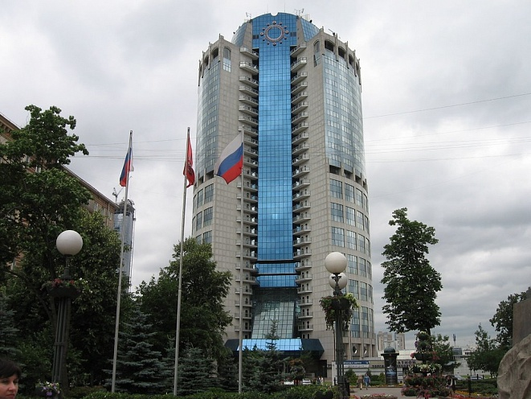

Башня 2000
Первая башня Москва-Сити — начало новой эры

Характеристики
- Высота:130 м
- Годы строительства:1998-2001
- Девелопер:«Промстрой-техноинвест»
- Застройщик:«Промстрой-техноинвест»
- Общая площадь:60 000 м²
- Скорость лифтов:6 м/с
- Количество этажей:34
- Количество машино-мест:401
- Инфраструктура:500 м²
- Участок:0
История башни
Эта башня появилась самой первой, сразу после строительства моста Багратион. Ее архитектором стал Борис Тхор — тот самый, которому вообще принадлежала идея создания Москва-Сити. Для своего времени и мост, и башня были настоящими посланниками футуристической архитектуры в России.
Башня 2000 стала пилотным проектом всего делового центра. Ее строительство длилось всего 3 года — с 1998 по 2001 год. Именно с этой башни началось формирование одного из самых амбициозных архитектурных проектов современной Москвы.
Сегодня Башня 2000 остается важной частью инфраструктуры Москва-Сити. В здании расположены офисы класса А, рестораны, магазины и выставочные залы. Благодаря прямому переходу на мост Багратион, башня имеет удобную связь с остальными зданиями делового центра.
Как добраться
📍 Адрес: Пресненская набережная, 8, Москва
🚇 Метро: Выставочная, Международная, Деловой центр
🌉 Связь: Переход на мост Багратион